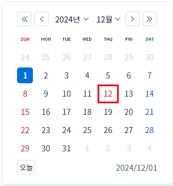
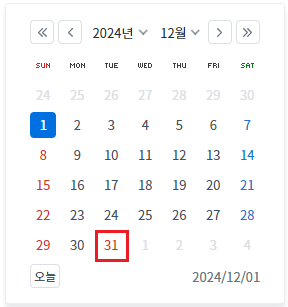

Calendar에 휴일을 지정하는 예제입니다. Calendar의 'setHoliday' 메소드를 사용하여 휴일을 설정할 수 있습니다.
Calendar에 휴일이 지정된 상태
Calendar에 휴일이 지정된 상태에서 휴일 변경하기
(기본 설정) Calendar에 휴일이 지정되지 않은 상태
테스트를 위해 화면 로딩 시 Calendar에 2024년 12월 1일이 선택되도록 설정되었습니다.
예제 영역 '휴일 지정'에서 테스트합니다.매년 1월 1일, 2월 2일, 3월 3일, 4월 4일, 5월 5일, 6월 6일, 7월 7일, 8월 8일, 9월 9일, 10월 10일, 11월 11일, 12월 12일이 휴일로 지정되었습니다.
Image 1.브라우저(Chrome) 실행 예시 - 휴일이 지정된 상태

예제 영역 '휴일 지정'에서 테스트합니다.STEP 1: 실행된 결과를 확인합니다.
매년 1월 1일, 2월 2일, 3월 3일, 4월 4일, 5월 5일, 6월 6일, 7월 7일, 8월 8일, 9월 9일, 10월 10일, 11월 11일, 12월 12일이 휴일로 지정되었습니다.
Image 2.브라우저(Chrome) 실행 예시 - 휴일이 지정된 상태
STEP 2: '지정된 휴일을 제거하고 매년 12월 31을 휴일로 지정하기' 버튼을 클릭합니다.
기 지정된 휴일이 모두 제거되고 매년 12월 31일이 휴일로 설정됩니다.
Image 3.브라우저(Chrome) 실행 예시

스크립트로 휴일을 지정합니다. 예제의 경우 화면이 로딩 후 지정하기 위해 'scwin.onpageload' 메소드에 작성했습니다.
Example 1.Script
//매년 1월 1일, 2월 2일, 3월 3일, 4월 4일, 5월 5일, 6월 6일, 7월 7일, 8월 8일, 9월 9일, 10월 10일, 11월 11일, 12월 12일을 휴일로 지정 cal_exam1.setHoliday("*0101,*0202,*0303,*0404,*0505,*0606,*0707,*0909,*1010,*1111,*1212");
휴일을 지정할 때 기 지정된 휴일을 제거하고 새로운 휴일을 지정하는 예제입니다.
Example 2.Script
//기존 설정을 제거하고, 매년 12월 31일을 휴일로 지정하기 cal_exam1.setHoliday("*1231", true);
setHoliday( dateStr , removeHoliday )
setHolidayRef( setHolidayRef )